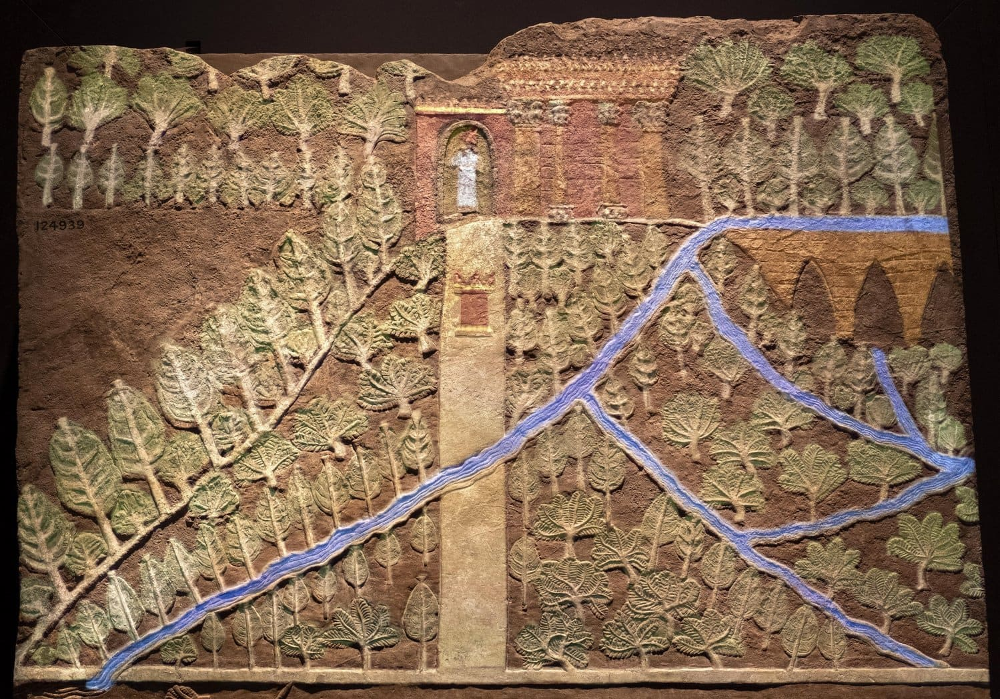
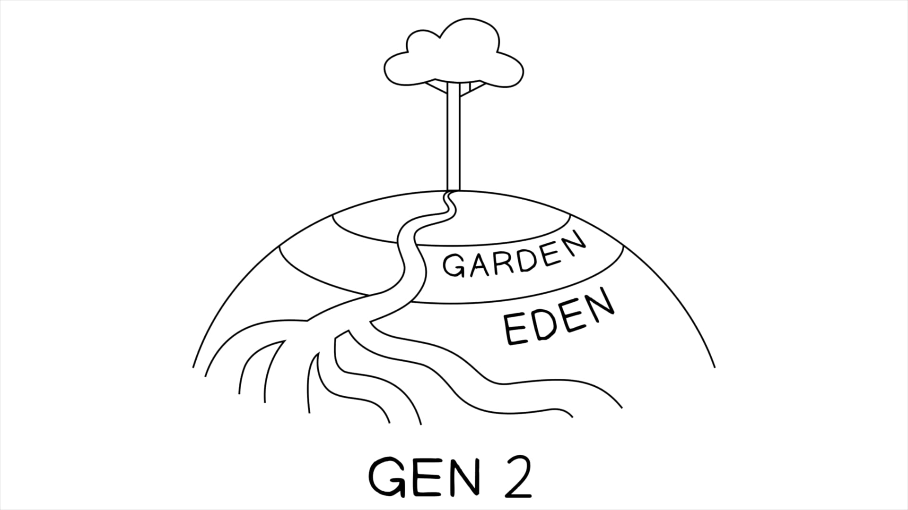

Ezequiel 47:1-48:35 apresenta a herança da terra restaurada como um novo Éden em três movimentos: (A) o rio da vida que sai do templo (47:1-12); (B) as fronteiras da herança da terra restaurada (47:13-23); e a cidade com suas doze portas e o seu nome (48:30-35). A nova alocação da terra enfatiza igualdade (47:13-14), segurança (45:8-9, a terra não será mais tomada pela monarquia) e a inclusão das nações (47:21-23, imigrantes recebem posse da terra ancestral). A cidade é um quadrado perfeito, como o templo em seu centro, e no centro está a presença gloriosa de Yahweh que Ezequiel viu na Babilônia no início do livro (Ezeq. 1:3). O livro dá a volta completa, retratando a reunificação do Céu e da Terra na nova criação, com Jerusalém como centro simbólico da obra redentora de Yahweh.Ezekiel 47:1-48:35 presents the restored land inheritance as a New Eden in three movements: (A) the River of Life from the Temple (47:1-12); (B) the Borders of the Restored Land Inheritance (47:13-23); and the city with its twelve gates and its name (48:30-35). The new allocation of the land emphasizes equality (47:13-14), security (45:8-9, the land will never again be seized by the monarchy), and the inclusion of the nations (47:21-23, immigrants receive possession of ancestral land). The city is a perfect square, as is the temple at its center, and in that center is the glorious presence of Yahweh that Ezekiel saw in Babylon at the beginning of the book (Ezek. 1:3). The book comes full circle, depicting the reunion of Heaven and Earth in the new creation with Jerusalem as the symbolic center of Yahweh’s redemptive work.
| PassagemPassage | Design LiterárioLiterary Design |
|---|---|
| 47:1-1247:1-12 | A - O Rio da Vida do TemploA - The River of Life from the Temple • 47:1-5 O passeio de Ezequiel pelo rio que sai do templo47:1-5 Ezekiel’s tour of the river coming out of the temple • 47:6-7 As árvores à margem do rio47:6-7 The trees on the side of the river • 47:8-12 O rio vai para o Mar Morto e traz nova vida47:8-12 The river goes to the Dead Sea and brings new life |
| 47:13-2347:13-23 | B - As Fronteiras da Herança da Terra RestauradaB - The Borders of the Restored Land Inheritance A - 47:13-14 A herança da terra a ser distribuída para as 12 tribos de IsraelA - 47:13-14 The land inheritance to be distributed to the 12 tribes of Israel B - 47:15-20 Descrição das 4 fronteiras externas da terraB - 47:15-20 Description of the land’s 4 outer borders A' - 47:21-23 A herança da terra a ser distribuída para as 12 tribos, incluindo imigrantesA' - 47:21-23 The land inheritance to be distributed for the 12 tribes, including immigrants |
| 48:1-2948:1-29 | B' - A Herança da Terra Restaurada para as Doze TribosB' - The Restored Land Inheritance for the Twelve Tribes A - 48:1-7 A herança da terra das 7 tribos ao norte da reserva sagradaA - 48:1-7 The land inheritance of the 7 tribes north of the sacred reserve B - 48:8-22 A reserva sagrada central para os levitas, sacerdotes, templo, cidade e chefeB - 48:8-22 The central sacred reserve for the Levites, priests, temple, city, and chief A' - 48:23-29 A herança da terra das 5 tribos ao sul da reserva sagradaA' - 48:23-29 The land inheritance of the 5 tribes south of the sacred reserve |
| 48:30-3548:30-35 | A' - As Doze Portas da Cidade e o seu NomeA' - The Twelve Gates of the City and its Name • 48:30-35 As 12 portas da cidade-reserva para as 12 tribos, e o nome da cidade48:30-35 The reserve-city’s 12 gates for the 12 tribes, and the name of the city |
O Rio da Vida do Templo. Criado por Tim Mackie para BibleProject Classroom: Ezequiel (2021).The River of Life from the Temple. Created by Tim Mackie for BibleProject Classroom: Ezekiel (2021).
O rio sai de um gotejar no templo (Ezeq. 47:2) e se torna um rio de mais de um quilômetro e meio de largura (Ezeq. 47:6), transformando o deserto da região do Mar Morto em uma terra frutífera, cheia de flores e peixes!The river turns from a trickle in the temple (Ezek. 47:2) into a river a mile wide (Ezek. 47:6), turning the desert of the Dead Sea region into a fruitful land full of flowers and fish!
Esse motivo é uma imagem poética comum nos profetas da nova criação. Tem raízes na narrativa da criação de Gênesis 1-2, onde o deserto caótico e escuro (Gên. 1:2), que não é habitável (Gên. 2:5-6), é transformado em um jardim exuberante (Gên. 1-2) que contém a cabeça de um grande rio que enriquece o mundo conhecido (Gên. 2:10-14). Os salmos de Sião (Sal. 46-48, veja também Sal. 36) retratam o templo com essa imagem simbólico-poética para descrever Yahweh como a fonte de toda a vida. Profetas posteriores usam essas imagens (deserto em jardim) como esperança futura (Is. 41:17-20, 44:1-5; Joel 3:17-18; Zac. 14:8-9), ou as invertem (jardim em deserto) como imagem do Dia de Yahweh (Joel 2:3; Jer. 4:24-26). Isso era um motivo comum nas concepções do Antigo Oriente Próximo sobre os templos como ponto de encontro do Céu e da Terra e como fontes de vida divina que enriquecem o mundo com fertilidade (abaixo: imagem do jardim real de Assurbanípal com o templo no topo da colina, século VII a.C.).This motif is a common poetic image in the prophets of the new creation. It's rooted in the creation narrative of Genesis 1-2 where the chaotic, dark wilderness (Gen. 1:2) that is uninhabitable (Gen. 2:5-6) is transformed into a lush garden (Gen. 1-2) that contains the head of a huge river that enriches the known world (Gen. 2:10-14). The Zion psalms (Ps. 46-48, see also Ps. 36) depict the temple with this symbolic-poetic imagery to describe Yahweh as the source of all life. Later prophets use these images (desert into garden) of future hope (Isa. 41:17-20, 44:1-5; Joel 3:17-18; Zech. 14:8-9), or they reverse the images (garden into desert) as an image of the day of Yahweh (Joel 2:3; Jer. 4:24-26). This was a common motif in ancient Near Eastern conceptions of temples as a meeting place of Heaven and Earth and as sources of divine life that enrich the world with fertility (Below: image of Ashurbanipal's royal garden with temple atop the hill, 7th century B.C.E.).
A visão de Ezequiel é sobre o templo celestial como fonte da vida divina que fluirá da presença de Yahweh e transformará toda a criação. Embora ele retrate essa restauração apenas dentro da estrutura da terra prometida de Israel, essa imagem localizada é em si uma figura da restauração cósmica. O rio do Éden (Gên. 2:10-14) era a fonte de vida para os reinos conhecidos do mundo (Egito, Assíria, Babilônia). É esse sentido universal que João, o vidente, adota de Ezequiel em sua descrição da nova Jerusalém em Apocalipse 21-22.Ezekiel’s vision is about the heavenly temple as the source of divine life that will flow out of Yahweh’s presence and transform all creation. Even though he portrays this restoration only within the framework of Israel’s promised land, this localized image is itself a picture of cosmic restoration. The Eden river (Gen. 2:10-14) was the source of life to the known kingdoms of the world (Egypt, Assyria, Babylon). It's this universal meaning that John the visionary adopts from Ezekiel in his depiction of the new Jerusalem in Revelation 21-22.
1 E ele me fez voltar à porta da casa; e eis que águas saíam de debaixo do limiar da casa para o oriente, porque a casa dava para o oriente, e as águas desciam de baixo, do lado sul da casa, do sul do altar. 2 E ele me levou pela porta do norte, e me fez rodear por fora até a porta de fora, pela porta que dá para o oriente; e eis que as águas borbulhavam do lado sul. 3 Quando o homem saiu para o oriente, com um cordel na mão, então mediu mil côvados, e me fez passar pelas águas, águas que chegavam aos tornozelos. 4 E mediu mil, e me fez passar pelas águas, águas que chegavam aos joelhos; e mediu mil, e me fez passar pelas águas, águas que chegavam às coxas. 5 E mediu mil, e era um rio que eu não podia atravessar, pois as águas tinham subido, águas para nadar, um rio que não se podia atravessar. 6 E disse-me: "Filho do humano, vês isto?" E tornou a trazer-me à margem do rio. 7 Quando me tornou a trazer, eis à margem do rio árvores, mui muitas, de uma e de outra banda. 8 E disse-me: "Estas águas saem para a região do oriente, e descem para o deserto do sul, e vão para o mar, sendo levadas para o mar, e as águas do mar são saradas. 9 E será que todo ser vivente que pulula, em todo lugar por onde o rio vai, terá vida; e haverá peixes, mui muitos, porque para onde estas águas vão, são saradas, e por onde o rio vai, terão vida. 10 E acontecerá que estarão ali pescadores; desde a fonte de Gedi até a fonte de Eglaim haverá lugar para estender as redes; os seus peixes serão conforme as suas espécies, como os peixes do Grande Mar, mui muitos. 11 Mas os seus charcos e pântanos não serão sarados; serão deixados para sal. 12 E junto ao rio, na sua margem, de uma e de outra banda, subirá toda sorte de árvore para comida; as suas folhas não murcharão, e o seu fruto não acabará; cada mês trarão primícias, porque as suas águas saem do santuário, e o seu fruto será para comida, e as suas folhas para cura."1 And he brought me back to the door of the house; and look, waters were coming out from under the threshold of the house toward the east, for the house was facing east, and the waters were going down from underneath, from the south side of the house, from south of the altar. 2 And he brought me out by way of the north gate, and he led me around a way on the outside, to the outside gate, by way of the gate that faces east, and look, waters were trickling from the south side. 3 When the man went out toward the east, with a line in his hand, then he measured a thousand cubits, and he led me through the waters, waters reaching the ankles. 4 And he measured a thousand, and led me through the waters, waters reaching the knees; and he measured a thousand, and led me through the waters, waters reaching the thighs. 5 And he measured a thousand, and it was a river that I was not able to cross, for the waters had risen, waters for swimming in, a river that could not be crossed. 6 And he said to me, “Son of a human, do you see this?” And he brought and returned me back to the edge of the river. 7 When he returned me, look, at the edge of the river, trees, very many, on the one side and on the other. 8 And he said to me, “These waters are going out toward region of the east, and going down into the southern-desert, then they go toward the sea, being made to flow into the sea, and the waters of the sea are healed. 9 And it will come about, every living creature that swarms, in every place where the river goes, they will have life. And there will be fish, very many, for where these waters go, then they are healed, and everywhere the river goes, they will have life. 10 And it will come about that fishermen will stand beside it; from the Spring of Gedi to the Spring of Eglayim, there will be a place for the spreading of nets. Their fish will be according to their kinds, like the fish of the Great Sea, very many. 11 But its swamps and marshes, they will not be healed, they will be left for salt. 12 By the river on its edge, on one side and on the other, there will come up every kind of tree for food; their leaves will not wither, and their fruit will not finish, and each month they will bring first-fruit, because their waters flow from the sanctuary, and their fruit will be for food, and their leaves for healing.”
Ezequiel 47:1-12. Tradução e Design Literário por Tim Mackie para BibleProject Classroom: Ezequiel (2021).Ezekiel 47:1-12. Translation and Literary Design by Tim Mackie for BibleProject Classroom: Ezekiel (2021).
| O Rio do Jardim do ÉdenThe River from the Garden of Eden |
|---|
O Rio do Jardim do Éden. Ilustração criada por Tim Mackie para BibleProject Classroom: Ezequiel (2021).The River from the Garden of Eden. Illustration created by Tim Mackie for BibleProject Classroom: Ezekiel (2021).
A imagem do rio que sai do monte de Deus remonta ao Éden. O rio transforma o deserto da região do Mar Morto em uma terra frutífera cheia de flores e peixes. Esse motivo é uma imagem poética comum nos profetas da nova criação, enraizada na narrativa da criação de Gênesis 1-2, onde o deserto caótico é transformado em um jardinho luxurioso que contém a cabeça de um grande rio que enriquece o mundo conhecido (Gên. 2:10-14). A visão de Ezequiel é sobre o templo celestial como fonte da vida divina que fluirá da presença de Yahweh e transformará toda a criação. João, o vidente, adota essa imagem de Ezequiel em sua descrição da nova Jerusalém em Apocalipse 21-22. O nome da cidade em Ezequiel 48:35 não é "Yahweh está lá" (exigiria Yahweh sham), mas "Yahweh está ali/acolá" (Yahweh shammah, com o he direcional), apontando para o templo no centro da terra — Yahweh não está na cidade, mas "acolá" no templo. Isso é um afastamento radical das tradições davídico-zionistas, onde a presença e a autoridade de Yahweh sozinhas estão no centro da terra.The image of a river flowing out from the mountain of God takes us right back to Eden. The river turns from a trickle in the temple into a river a mile wide, turning the desert of the Dead Sea region into a fruitful land full of flowers and fish. This motif is a common poetic image in the prophets of the new creation, rooted in the creation narrative of Genesis 1-2, where the chaotic wilderness is transformed into a lush garden containing the head of a huge river that enriches the known world (Gen. 2:10-14). Ezekiel’s vision is about the heavenly temple as the source of divine life that will flow out of Yahweh’s presence and transform all creation. John the visionary adopts this image from Ezekiel in his depiction of the new Jerusalem in Revelation 21-22. The name of the city in Ezekiel 48:35 is not “Yahweh is there” (that would require Yahweh sham), but “Yahweh is over there” (Yahweh shammah, with the directional heh), pointing to the temple at the center of the land — Yahweh is not in the city, but “over there” in the temple. This is a huge departure from the David-Zion traditions, where Yahweh’s presence and authority alone stand at the center of the land.
Em Ezequiel 47:13-48:29, Ezequiel retrata uma nova divisão e distribuição de terra segundo fronteiras e divisões iguais que nunca existiram historicamente antes ou depois dele. É uma geografia teológica com simetria desenhada para enfatizar temas-chave.In Ezekiel 47:13-48:29, Ezekiel depicts a new division and allotment of land according to boundaries and equal divisions that never existed historically before or after him. It is theological geography with symmetry designed to emphasize key themes.
A ordem e a colocação das tribos reflete um sistema de graduação ancestral. As tribos das concubinas de Jacó (Dã, Aser, Naftali, Gade) são colocadas mais longe do santuário, enquanto as descendentes de suas duas esposas são colocadas igualmente em ambos os lados dele. Isso resulta em um reordenamento de localização que se afasta de qualquer realidade histórica.The order and placement of the tribes reflects an ancestral grading system. The tribes from Jacob’s concubines (Dan, Asher, Naphtali, Gad) are placed furthest from the sanctuary, while those descended from his two wives are placed equally on both sides of it. This results in a reordering of location that departs from any historical reality.
Ezequiel 47:13-14 enfatiza a igualdade. As localizações históricas das tribos foram resultado de muitos fatores complicados e motivos mistos de diferentes tribos (Dã se mudou para fundar um novo templo, Juízes 17-21; as tribos da Transjordânia tinham motivos mistos, Nm. 32; as tribos do Norte se separaram depois de Salomão, 1 Reis 11-12). Ezequiel 45:8-9 enfatiza a segurança: a visão de Ezequiel garante que a terra permanecerá para sempre como posse tribal; não será tomada pela monarquia para abuso, como aconteceu tantas vezes na história de Israel (por exemplo, a vinha de Nabote, 1 Reis 21). Ezequiel 47:21-23 enfatiza a inclusão das nações: Ezequiel surpreendentemente retrata gentios e imigrantes que passam a residir permanentemente entre Israel como elegíveis para a posse das terras ancestrais. Isso equivale a plena inclusão no povo da aliança, tão dramático quanto a declaração de Isaías em Isaías 56:1-8.Ezekiel 47:13-14 emphasizes equality. The historical locations of the tribes were the result of many complicated factors and mixed motives of different tribes (Dan relocated to found a new temple, Judges 17-21; the Transjordan tribes had mixed motives, Num. 32; the Northern tribes seceded after Solomon, 1 Kgs. 11-12). Ezekiel 45:8-9 emphasizes security. Ezekiel’s vision ensures the land will forever remain a tribal possession; it will not be seized by the monarchy for abuse as it was so many times in Israel’s history (e.g., Naboth’s vineyard, 1 Kgs. 21). Ezekiel 47:21-23 emphasizes the inclusion of the nations. Ezekiel surprisingly depicts gentiles and immigrants who take up permanent residence among Israel as eligible for possession of the ancestral lands. This is tantamount to full inclusion in the covenant people, as dramatic as Isaiah’s statement in Isaiah 56:1-8.
A nomeação das portas da nova cidade em Ezequiel 48:30-35 teve precedentes mais cedo na história de Israel (2 Reis 14:13; Jer. 37:13), mas a de Ezequiel é uma representação esquemática de todas as tribos. A cidade é um quadrado perfeito (Ezeq. 48:30-35), como é o templo em seu centro, e nesse centro está a presença gloriosa de Yahweh que Ezequiel viu na Babilônia no início do livro (Ezeq. 1:3). O livro dá a volta completa, retratando a reunificação do Céu e da Terra na nova criação, com Jerusalém como centro simbólico da obra redentora de Yahweh.The naming of the gates of the new city in Ezekiel 48:30-35 had precedence earlier in Israel’s history (2 Kgs. 14:13; Jer. 37:13), but Ezekiel’s is a schematic representation of all of the tribes. The city is a perfect square (Ezek. 48:30-35), as is the temple at its center, and in that center is the glorious presence of Yahweh that Ezekiel saw in Babylon at the beginning of the book (Ezek. 1:3). The book comes full circle, depicting the reunion of Heaven and Earth in the new creation with Jerusalem as the symbolic center of Yahweh’s redemptive work.
O nome da cidade em Ezequiel 48:35 não é, ao contrário da maioria das traduções contemporâneas, "Yahweh está lá". Essa tradução exigiria o hebraico Yahweh sham (יהוה שם), e não é isso que o hebraico de Ezequiel 48:35 diz! Há um sufixo modificador em "lá" chamado heh direcional (um -ah anexado ao final de uma palavra) que dirige a atenção para longe da perspectiva do falante: Yahweh shammah (יהוה שמה). Quando o substantivo "lá" (sham) é usado com o heh direcional, significa sempre "ali/acolá" (shammah). O ponto de tudo isso é que o nome da cidade é "Yahweh está ali/acolá", o que aponta para o templo no centro da terra. Em outras palavras, Yahweh não está na cidade, mas "acolá" no templo. A cidade tornou-se um apontador simbólico para a habitação de Yahweh no templo. Isso é um grande afastamento das tradições Davi-Sião, onde Sião é equivalente ao palácio do rei davídico e ao templo. A crítica de Ezequiel à monarquia está conectada a essa separação total do templo do poder da monarquia. É a presença e a autoridade de Yahweh sozinhas que estão no centro da terra.The name of the city in Ezekiel 48:35 is not, contrary to most contemporary translations, “Yahweh is there.” That translation would require the Hebrew Yahweh sham (יהוה שם), and that is not what the Hebrew of Ezekiel 48:35 says! There is a modifying suffix on “there” called a directional heh (an -ah attached to the end of a word) which directs attention away from the perspective of the speaker: Yahweh shammah (יהוה שמה). When the noun “there” (sham) is used with the directional heh, it always means “over there” (shammah). The point of all of this is that the name of the city is “Yahweh is over there,” which points to the temple at the center of the land. In other words, Yahweh is not in the city, but “over there” in the temple. The city has become a symbolic pointer to the dwelling place of Yahweh in the temple. This is a huge departure from the David-Zion traditions, where Zion is equivalent with the palace of the Davidic king and with the temple. Ezekiel’s critique of the monarchy is connected to this total separation of the temple from the power of the monarchy. It is Yahweh’s presence and authority alone that stand at the center of the land.
Por exemplo: “os céus” (שמים) torna-se “em direção aos céus” (שמימה, ver Gên. 15:5); “a casa” (הבית) torna-se “em direção/para dentro da casa” (הביתה, ver Gên. 43:16); e “lá” (שם) torna-se “ali/acolá” (שמה, ver Gên. 19:20). Quando o substantivo “lá” (sham) é usado com o heh direcional, significa sempre “ali/acolá” (shammah).For example: “the skies” (שמים) becomes “toward the skies” (שמימה, see Gen. 15:5); “the house” (הבית) becomes “toward/into the house” (הביתה, see Gen. 43:16); and “there” (שם) becomes “over there/to there” (שמה, see Gen. 19:20). When the noun “there” (sham) is used with the directional heh, it always means “over there” (shammah).
Ezequiel 1:20 NASB* — Onde quer que estivesse o Espírito, os seres viventes iam para lá/acolá (שמה) ...Ezekiel 1:20 NASB* — Wherever the Spirit was, the living-beings went toward there/over there (שמה) ...
Palavras-chave adaptadas pelo professorKey Words Adapted by Teacher
Jeremias 27:22 NASB* — Eles serão levados para a Babilônia e estarão acolá (שמה) até o dia em que eu os visitar ...Jeremiah 27:22 NASB* — They will be carried to Babylon and they will be over there (שמה) until the day I visit them ...
Palavras-chave adaptadas pelo professorKey Words Adapted by Teacher
“Quando usado em textos como Gênesis 19:20, 22; 21:13 e Jeremias 18:2, o hebraico shammah aponta para um lugar que se antecipa visitar, um destino. O nome da cidade de Ezequiel sugere, assim, que é o ponto de encontro para aqueles a caminho da presença divina. ‘O Senhor que você vê é por ali’ — a cidade é um ponto-chave ou porto de escala para os peregrinos que buscam aproximar-se de Deus.”“When used in texts such as Genesis 19:20, 22; 21:13, and Jeremiah 18:2, the Hebrew shammah points to a place one anticipates visiting, a destination. The name of Ezekiel’s city thus suggests it is the rendezvous point for those on their way to the divine presence. ‘The Lord whom you see is that-a-way’—the city is a key waypoint or port of call for pilgrims seeking to draw near to God.” Cook, Stephen L. (2018). Ezekiel 38-48: A New Translation with Introduction and Commentary. Yale University Press. 297.
A visão é o último oráculo datado do livro de Ezequiel (ver 48:35, 40:1). Ela é datada do primeiro dia de um ano novo, 25 anos após a deportação de Joaquim (597 a.C.), 14 anos após a destruição de Jerusalém (586 a.C.) e 10 anos após o início de seus oráculos de salvação (conforme observado em 48:35, 33:21-22), isto é, no ano de 572 a.C.The vision is the final dated oracle in the book of Ezekiel (see 48:35, 40:1). It is dated to first day of a new year, 25 years after Jehoiachin’s deportation (597 B.C.E.), 14 years after the destruction of Jerusalem (586 B.C.E.), and 10 years after his salvation oracles began (as noted in 48:35, 33:21-22), that is, in the year 572 B.C.E.
Seja como os intérpretes integrem a visão de Ezequiel em sua síntese maior da escatologia bíblica, devemos levar a sério esse contexto primário. Esta visão é, antes de tudo, uma mensagem de Ezequiel aos seus contemporâneos no exílio e parte da mensagem da Bíblia Hebraica a um Israel pós-exílico de volta a Jerusalém.However interpreters integrate Ezekiel’s vision into their larger synthesis of biblical eschatology, we must take this primary context seriously. This vision is first and foremost a message from Ezekiel to his contemporaries in exile, and part of the Hebrew Bible’s message to post-exilic Israel back in Jerusalem.
Vinte e cinco anos é metade de um ciclo de Jubileu (mencionado em Ezeq. 48:35; 46:17), e o décimo dia do primeiro mês é precisamente o dia em que começam os preparativos para a Páscoa (ver Ezeq. 48:35; Êdx. 12:3). Tanto a Páscoa quanto o Jubileu estão profundamente ligados à história da libertação de seu povo e de sua terra da escravidão por Yahweh (ver Ezeq. 48:35; Êdx. 12-13; Lev. 25).Twenty-five years is half of a Jubilee cycle (referred to in Ezek. 48:35; 46:17), and the 10th day of the first month is precisely the day that the preparations for Passover begin (see Ezek. 48:35; Exod. 12:3). Both Passover and the Jubilee are deeply connected to the story of Yahweh’s liberation of his people and his land from slavery (see Ezek. 48:35; Exod. 12-13; Lev. 25).
Esta visão final é chamada de “visões de Elohim” (מראות אלהים, Ezeq. 40:2). Este é o mesmo título dado às suas visões anteriores da carruagem-trono divina (Ezeq. 1:1-3) e de seu passeio virtual pelo templo de Jerusalém (8:1). Essas visões estão explicitamente colocadas “entre os céus e a terra” (Ezeq. 8:3), que é uma maneira bíblica de se referir ao que chamaríamos de “dimensão alternativa” da realidade, o que explica as muitas características simbólicas e surreais de suas experiências visionárias.This final vision is called “visions of Elohim” (מראות אלהים, Ezek. 40:2). This is the same title given to his earlier visions of the divine throne-chariot (Ezek. 1:1-3) and of his virtual tour of the Jerusalem temple (8:1). Those visions are explicitly placed “in-between the skies and the land” (Ezek. 8:3), which is a biblical way of referring to what we would call an “alternate dimension” of reality, which explains the many symbolic and surreal features of his visionary experiences.
As “visões divinas” de Ezequiel são experiências apocalípticas nas quais ele ganha acesso aos céus, onde “vê” um mundo de símbolos que lhe dão nova perspectiva sobre os eventos terrenos. Essas visões estão repletas de simbolismo profundo, enraizado em imagens bíblicas anteriores (a criação cósmica, o Éden, o Sinai, Jerusalém e o templo). Quaisquer que sejam os princípios interpretativos que usamos para entender o simbolismo de Ezequiel 1 e 8-11, é apenas coerente que nos aproximemos de Ezequiel 40-48 com as mesmas expectativas.Ezekiel’s “divine visions” are apocalyptic experiences in which he gains access to the heavens where he “sees” a world of symbols that give him new perspective on earthly events. These visions are packed with heavy doses of symbolism steeped in earlier biblical imagery (cosmic creation, Eden, Sinai, Jerusalem, and temple). Whatever interpretive principles we use to understand the symbolism of Ezekiel 1 and 8-11, it is only consistent that we approach Ezekiel 40-48 with the same expectations.
A visão do templo de Ezequiel é o clímax de um tema bíblico central que começou em Gênesis 1-2 e é desenvolvido por todo o Antigo Testamento.Ezekiel’s temple vision is the culmination of a core biblical theme that began in Genesis 1-2 and is developed throughout the Hebrew Bible.
1. O Templo Cósmico1. The Cosmic Temple
Gênesis 1:1-2:3 retrata a criação como a separação e a organização de um cosmos de três camadas (os céus, a terra, o abismo sob a terra), no qual o Céu e a Terra se unem através da imagem de Deus — a humanidade como sacerdotes-reais de Deus.Genesis 1:1-2:3 depicts creation as the separation and organization of a three-tiered cosmos (the skies, the land, the abyss under the land) in which Heaven and Earth are joined together through the image of God—humanity as God’s royal-priests.
O esquema de sete dias e a sequência do caos ao cosmos, a colocação da imagem divina sobre a terra, esses detalhes (e muitos outros) retratam a criação como um templo cósmico.The seven-day scheme and the sequence from chaos to cosmos, the placement of the divine image on the land, these details (and many more) portray creation as a cosmic temple.
2. O Éden como Proto-Templo2. Eden as Proto-Temple
O Éden é retratado como um jardim em uma alta montanha onde o Céu e a Terra se sobrepõem, e o lugar para o qual Deus eleva a humanidade para aprender a sabedoria e o temor do Senhor, a fim de que possam governar o mundo como parceiros de Deus.Eden is portrayed as a high mountain garden where Heaven and Earth overlap, and the place to which God elevates humanity to learn wisdom and the fear of the Lord so they can rule the world as God’s partners.
Gênesis 1-2 retrata um ideal divino para o cosmos como um lugar onde o Céu e a Terra são reinos distintos que se sobrepõem e estão unidos em harmonia.Genesis 1-2 depict a divine ideal for the cosmos as a place where Heaven and Earth are distinct realms that overlap and are bound together in harmony.
3. A Terra Prometida, o Monte Moriá e Betel3. The Promised Land, Mount Moriah, and Bethel
A terra de Canaã é retratada como uma terra semelhante ao Éden, para a qual Abraão é elevado para fora do “fogo dos caldeus” (Gên. 11:27-32). É um lugar onde ele encontra Deus em altas montanhas e junto a árvores sagradas, e é abençoado por Deus (Gên. 12:1-9, 13:12-18).The land of Canaan is depicted as an Eden-like land, to which Abraham is elevated out of the “fire of the Chaldeans” (Gen. 11:27-32). It is a place where he meets with God on high mountains and by sacred trees, and is blessed by God (Gen. 12:1-9, 13:12-18).
Por causa do pecado de Abraão e Sara contra Agar (Gên. 16), Deus exige a entrega dos filhos primogênitos de Abraão (Ismael em Gên. 21 e Isaque em Gên. 22). No Monte Moriá (proto-Sião), Deus provê uma oferta substituta que tanto redime o filho escolhido quanto morre pelos pecados de Abraão e Sara.Because of Abraham and Sarah’s sin against Hagar (Gen. 16), God requires the surrender of Abraham’s firstborn sons (Ishmael in Gen. 21 and Isaac in Gen. 22). On Mount Moriah (proto-Zion) God provides a substitute offering that both redeems the chosen son and dies for the sins of Abraham and Sarah.
Deus encontra Jacó em Betel (Gên. 28:10-20), onde ele tem uma visão apocalíptica do Céu e da Terra se sobrepondo em um campo. Ele vê a rampa que conecta o Céu e a Terra, e recebe a promessa de que Deus o restaurará a essa terra semelhante ao Éden após seu longo exílio. Observe que Jacó encontra guardas-angélicos nas fronteiras quando reentra na terra (Gên. 32:1-2).God meets Jacob at Bethel (Gen. 28:10-20), where he has an apocalyptic vision of Heaven and Earth overlapping in a field. He sees the ramp that connects Heaven and Earth, and he receives a promise that God will restore him to this Eden-like land after his long exile. Note that Jacob encounters angelic boundary-guards when he re-enters the land (Gen. 32:1-2).
4. O Monte Sinai4. Mount Sinai
Na sarça ardente (Êdx. 3), no Monte Horebe/Sinai, Moisés encontra uma figura divino-humana no meio de uma árvore em chamas, e o lugar é chamado de “terra santa”. Este se tornará o mesmo lugar onde Israel virá encontrar-se com Yahweh (Êdx. 19), que aparecerá em nuvem, vento e fogo (Êdx. 19-20).In the burning bush (Exod. 3), on Mount Horeb/Sinai, Moses encounters a divine-human figure in the middle of a fiery tree, and the space is called “holy ground.” This will become the same place where Israel will come to meet with Yahweh (Exod. 19) who will appear in cloud, wind, and fire (Exod. 19-20).
5. O tabernáculo 6. O rio Jordão 7. Jerusalém, Sião, o templo5. The tabernacle 6. The Jordan River 7. Jerusalem, Zion, the temple
A estrutura de boa parte desta visão parece recordar intencionalmente a ampla estrutura narrativa dos relatos do Êxodo e do Sinai. [Adaptado de Block, Daniel (2013). “Vislumbrando as Boas-Novas: Dez Chaves Interpretativas para a Visão Final de Ezequiel.” In Beyond the River Chebar: Studies in Kingship and Eschatology in the Book of Ezekiel (1ª ed., pp. 175-196). The Lutterworth Press. 163-164.]The structure of much of this vision seems to intentionally recall the broad narrative structure of the Exodus and Sinai narratives. [Adapted from Block, Daniel (2013). “Envisioning the Good News: Ten Interpretive Keys to Ezekiel’s Final Vision.” In Beyond the River Chebar: Studies in Kingship and Eschatology in the Book of Ezekiel (1st ed., pp. 175-196). The Lutterworth Press. 163-164.]
| RecursoFeature | Êxodo (Narrativa)Exodus (Narrative) | Oráculos de Restauração de EzequielEzekiel’s Restoration Oracles |
|---|---|---|
| Yahweh comissiona um agente humano.Yahweh commissions a human agent. | Êdx. 3–4Exod. 3–4 | Ezeq. 33Ezek. 33 |
| Yahweh separa Israel das nações e a liberta da escravidão.Yahweh separates Israel from the nations and delivers her from bondage. | Êdx. 5–13Exod. 5–13 | Ezeq. 34–37Ezek. 34–37 |
| Forças inimigas desafiam a obra salvífica de Yahweh em favor do seu povo.Enemy forces challenge Yahweh’s salvific work on his people’s behalf. | Êdx. 14–15Exod. 14–15 | Ezeq. 38–39Ezek. 38–39 |
| Yahweh aparece em uma alta montanha.Yahweh appears on a high mountain. | Êdx. 19Exod. 19 | Ezeq. 40:1–4Ezek. 40:1–4 |
| Yahweh provê a sua habitação entre o seu povo.Yahweh provides for his residence among his people. | Êdx. 25–40Exod. 25–40 | Ezeq. 40:5–43:27Ezek. 40:5–43:27 |
| Yahweh prescreve a resposta apropriada à sua graça.Yahweh prescribes the appropriate response to his grace. | LevíticoLeviticus | Ezeq. 44:1–46:24Ezek. 44:1–46:24 |
| Yahweh provê a distribuição da sua terra para o seu povo.Yahweh provides for the apportionment of his land to his people. | Nm. 34–35Num. 34–35 | Ezeq. 47–48Ezek. 47–48 |
Ezequiel Reflete o Êxodo. Criado por Tim Mackie para BibleProject Classroom: Ezequiel (2021).Ezekiel Mirrors Exodus. Created by Tim Mackie for BibleProject Classroom: Ezekiel (2021).
Há semelhanças entre as revelações divinas que Ezequiel e Moisés recebem. Ambas são recebidas em altas montanhas para serem dadas ao povo após o estabelecimento de uma aliança, ambas focam em preocupações templárias e sacerdotais com os levitas e uma família de sacerdotes de elite, a presença de Yahweh se manifesta em nuvem divina, e nem Ezequiel nem Moisés chegam a experimentar pessoalmente a terra prometida.There are similarities between the divine revelations Ezekiel and Moses receive. They are both received on high mountains to be given to the people after the making of a covenant, both focus on temple and priestly concerns with Levites and an elite family of priests, the presence of Yahweh is manifest in divine cloud, and neither Ezekiel nor Moses get to personally experience the promised land.
Há também diferenças. A linhagem sacerdotal é diferente (Zadoque vs. Arão, Ezeq. 43:19, Ezeq. 44:15), as vestes sacerdotais são diferentes (44:17-19); não há mobiliário do templo; e há ofertas diferentes (por exemplo, a Lua Nova em 46:6-7 vs. Nm. 28:11).There are also differences. The priestly line is different (Zadok vs. Aaron Ezek. 43:19, Ezek. 44:15), the priestly garments are different (44:17-19); there are no temple furnishings; and there are different offerings (e.g., New Moon in 46:6-7 vs. Num. 28:11).
Estes não são os únicos lugares onde Ezequiel apontou para o novo templo de adoração de Israel. Ele desenvolveu esse tema em Ezequiel 20:32-45 e Ezequiel 37:26-28, e as imagens desses textos precisam ser levadas em conta aqui.These are not the only places Ezekiel pointed forward to Israel’s new worship temple. He developed this theme in Ezekiel 20:32-45 and Ezekiel 37:26-28 and the images from those texts need to be taken into account here.
Alguns elementos na visão de Ezequiel desafiam a imaginação ou representam um ideal claramente simbólico.Some elements in Ezekiel’s vision stretch the imagination or represent a clearly symbolic ideal.
“O plano da cidade é idealizado como um quadrado perfeito com três portas em cada lado, para dar acesso às doze tribos. A ênfase nas doze tribos, por si só, inverte cinco séculos de história. A divisão da terra de Israel entre as tribos desconsidera em grande parte as realidades topográficas e históricas. As dimensões do templo e da cidade são dominadas por múltiplos de cinco, sendo vinte e cinco um número particularmente comum. Em suma, o esquema de Ezequiel parece altamente artificial, lançando dúvida sobre qualquer interpretação que espere um cumprimento literal do seu plano.”“The plan of the city is idealized as a perfect square with three gates punctuating each side to provide admittance for the twelve tribes. The emphasis on the twelve tribes itself reverses five centuries of history. The apportionment of the land of Israel among the tribes to a large extent disregards topographic and historical realities. The dimensions of the temple and the city are dominated by multiples of five, with twenty-five being a particularly common number. All in all Ezekiel’s scheme appears highly contrived, casting doubt on any interpretation that expects a literal fulfillment of his plan.” Block, Daniel (1998). The Book of Ezekiel, Chapters 25-48 (The New International Commentary on the Old Testament). Eerdmans.
O plano de Ezequiel aparentemente não foi lido nem recebido como um programa literal de restauração por ninguém na comunidade pós-exílica (Esdras-Neemias mostra o desejo de restaurar Israel segundo a Torá Mosaica, não a de Ezequiel: sem redistribuição de terra, sem “príncipe”, o templo não foi construído segundo a descrição de Ezequiel).Ezekiel’s plan was apparently not read or received as a literal program of restoration by anyone in the post-exilic community (Ezra-Nehemiah shows a desire to restore Israel according to the Mosaic Torah, not Ezekiel’s: no land redivision, no “prince,” the temple was not built according to Ezekiel’s description).
Quando João, o vidente, retrata a nova criação em Apocalipse 21-22, ele está claramente adotando linguagem e imagens de Ezequiel 40-48 (a visão de João está em uma “alta montanha” em 21:10; uma nova Jerusalém na qual Deus habita em 21:11; o guia celestial com a vara de medir em 21:15-17; plano simétrico para a cidade em 21:11-21; rio da vida em 22:1), mas nunca literalmente. Ele adapta as imagens de Ezequiel para seus próprios propósitos retóricos e teológicos.When John the visionary depicts the new creation in Revelation 21-22, he is clearly adopting language and imagery from Ezekiel 40-48 (John’s vision is on a “high mountain” in 21:10; a new Jerusalem in which God dwells in 21:11; the heavenly guide with a measuring rod in 21:15-17; symmetrical plan for the city in 21:11-21; river of life in 22:1), but never literally. He adapts Ezekiel’s images for his own rhetorical and theological purposes.
Ezequiel contém numerosas experiências visionárias que eram claramente explorações simbólicas de realidades teológicas.Ezekiel contains numerous visionary experiences that were clearly symbolic explorations of theological realities.
Um Projeto para o Fim dos TemposA Blueprint for the Eschaton
Esta visão sustenta que a visão do templo de Ezequiel descreve um templo real a ser construído quando o Messias retornar para restaurar Jerusalém e reconstruir o reino messânico.This view holds that Ezekiel’s temple vision describes an actual temple to be built when the Messiah returns to restore Jerusalem and rebuild the messianic kingdom.
Há vários problemas com esta visão.There are several problems with this view.
Um Ideal SimbólicoA Symbolic Ideal
Esta visão sustenta que estes capítulos fazem parte da mensagem profética de desafio e esperança de Ezequiel (Ezeq. 40:4, 43:10-12), destinada a gerar arrependimento. Ele retrata um templo idealizado usando “geografia e arquitetura simbólicas” para transmitir sua mensagem profética; não foi destinado a referência histórica precisa nem como um projeto para aqueles que tentassem construir um templo futuro.This view holds that these chapters are part of Ezekiel’s prophetic message of challenge and hope (Ezek. 40:4, 43:10-12) aimed at generating repentance. He depicts an idealized temple using “symbolic geography and architecture” to convey his prophetic message; it was not intended for precise historical reference or as a blueprint for those attempting to build a future temple.
A localização do templo (“uma montanha muito alta”, Ezeq. 40:2) é simbólica. “Alta montanha” = ponto de conexão simbólico entre o Céu e a Terra. O templo é celestial e já existe, e não precisa ser construído.The location of the temple (“a very high mountain”, Ezek. 40:2) is symbolic. “High mountain” = symbolic connection point between Heaven and Earth. The temple is heavenly and already exists, and it doesn’t need to be built.
O complexo cidade-templo tem mais de um quilômetro e meio de largura e é um quadrado perfeito, uma versão ampliada do santíssimo (Ezeq. 48:17, 48:35).The city-temple complex is over one mile wide and a perfect square, a magnified version of the holy of holies (Ezek. 48:17, 48:35).
Há um rio vindo do monte do templo (Ezeq. 47:1–12). É um fluxo simbólico que desempenha um papel semelhante ao rio de quatro cabeças do Éden (Gên. 2:10-14).There is a river coming from the temple mount (Ezek. 47:1–12). It is a symbolic stream that plays a similar role to the four-headed river from Eden (Gen. 2:10-14).
A imagem de sacerdotes oferecendo sacrifícios contínuos (Ezeq. 45) e do “príncipe” messiânico tendo ofertas pelo pecado feitas em seu favor (Ezeq. 45:22) é inconsistente com a teologia do Novo Testamento sobre a finalidade da morte sacrificial de Cristo (Hb. 9–10).The image of priests offering continuing sacrifices (Ezek. 45) and of the messianic “prince” having sin offerings made on his behalf (Ezek. 45:22) is inconsistent with the New Testament theology of the finality of Christ’s sacrificial death (Heb. 9–10).
Retórica Territorial (Visão Utópica)Territorial Rhetoric (Utopian Vision)
Em múltiplos pontos das visões, é dito a Ezequiel o propósito de lhe serem mostrados esses espaços e o que ele deveria fazer com tudo o que vê e escreve.At multiple points in the visions, Ezekiel is told the purpose of his being shown these spaces and what he is supposed to do with all that he sees and writes down.
Ezequiel 40:1-4 e 43:1-11 deixam claro que a visão de Ezequiel foi originalmente dirigida a um público no exílio, e foi designada para ter um impacto retórico sobre a visão que tinham da restauração esperada e sobre a visão de si mesmos diante de Yahweh.Ezekiel 40:1-4 and 43:1-11 make it clear that Ezekiel’s vision was originally addressed to an exilic audience, and it was designed to have a rhetorical impact on their view of the hoped for restoration and on their view of themselves before Yahweh.
“Se Ezequiel 40-48 não fornece um projeto de construção para o templo pós-exílico, será este templo destinado a ser apenas uma criação literária, um símbolo para a presença universal de Deus? ... Qual seria o propósito retórico de produzir um texto no exílio babilônico que organiza o Israel pós-exílico em torno de um templo, se Ezequiel não esperasse que o Israel retornado tivesse um templo? Acho incompreensível que Ezequiel pudesse imaginar uma sociedade sem um templo no centro simbólico da sociedade. Em vez de uma escolha entre um plano de construção ou uma metáfora simbólica, há uma terceira opção: é retórica territorial ... Este texto exige uma mudança social radical, reorganizando toda a geografia de Israel em torno da presença de Yahweh. Cada espaço que foi distorcido e abusado pelos sacerdotes e reis de Israel foi reformado e subordinado à presença de Yahweh na terra.”“If Ezekiel 40-48 do not provide a construction blueprint for the post-exilic temple, is this temple intended to be only a literary creation, a symbol for the universal presence of God? ... What would be the rhetorical purpose of producing a text in the Babylonian exile which organizes post-exilic Israel around a temple if Ezekiel didn’t expect the returned Israel to have a temple? I find it incomprehensible that Ezekiel could imagine a society without a temple at the symbolic center of the society. Rather than a choice between a building plan or a symbolic metaphor, there is a third option: it is territorial rhetoric ... This text calls for radical social change, by reorganizing Israel’s entire geography around Yahweh’s presence. Every space that was distorted and abused by Israel’s priests and kings has been reshaped and made subordinate to Yahweh’s presence in the land.” Stevenson, Kalinda Rose (1996). The Vision of Transformation: The Territorial Rhetoric of Ezekiel 40-48. Scholars Press. 151-153.
“Thomas More inventou o termo ‘utopia’ em 1516 brincando com dois prefixos gregos, ou e eu. O prefixo ou significa ‘não’ e eu significa ‘bem’. Combinado com a palavra grega topos, que significa ‘lugar’, uma utopia é, assim, ao mesmo tempo um lugar de bem-estar e um não-lugar fictício. O que a utopia de More não é, ao contrário do uso disseminado, é um lugar perfeito. E também não o é o templo e a terra ideais de Ezequiel. A utopia de Ezequiel ainda não é a plena realização do reinado de Deus sobre a nova criação. O acesso ao templo ainda é limitado apenas aos sacerdotes, sacrifícios de expiação pelos pecados ainda são necessários, e o Davi ideal de Ezequiel 34:23-24 e 37:25 está muito distante do ‘chefe’ diminuído de Ezequiel 40-48. Em particular, o prometido transplante de coração futuro de Israel não é pressuposto (Ezeq. 11:19-20 e 36:26-27); ofertas de expiação não seriam necessárias se isso já tivesse acontecido. Uma utopia literária do tipo de More é um meio de crítica social, que deve lidar de modo persuasivo com as contínuas lutas e tragédias da vida real. Uma utopia literária, portanto, mantém pelo menos um pé no mundo problemático do presente ... A ilha original de Utopia descrita por More em seu livro de 1516 não era futurista nem escatológica, mas uma crítica instigante da Inglaterra contemporânea. Similarmente, Ezequiel 40-48 não é uma visão de uma realidade futura dada por Deus, que os leitores devam encaixar em todos os demais planos de Deus para o destino da terra. Tampouco é um projeto para um templo realista e efetivo destinado à construção humana ... É um texto revolucionário destinado a desafiar o status quo enquanto Israel aguardava seu retorno da Babilônia.”“Sir Thomas More in 1516 invented the term ‘utopia’ by playing on two Greek prefixes, ou and eu. The prefix ou means ‘no/not’ and eu means ‘good/well.’ Combined with the Greek word topos, which means ‘place’ a utopia is thus, at once a place of well-being and a fictive non-place. What More’s utopia is not, contrary to widespread usage, is a perfect place. And neither is Ezekiel’s ideal temple and land. Ezekiel’s utopia is not yet the full realization of God’s reign over the new creation. Access to the temple is still limited to only the priests, sacrifices of atonement for sins are still necessary, and the ideal David of Ezekiel 34:23-24 and 37:25 is a far cry from the diminished ‘chief’ of Ezekiel 40-48. In particular, Israel’s promised future heart transplant is not presupposed (Ezek. 11:19-20 and 36:26-27); atonement offerings would not be necessary if it had already taken place. A literary utopia of More’s type is a means of social critique, which must grapple persuasively with the continuing struggles and tragedies of real life. A literary utopia thus keeps at least one foot in the problematic world of the present ... The original island of Utopia described by More in his book of 1516 was not futuristic or eschatological, but an engaging critique of contemporary England. Similarly, Ezekiel 40-48 is not a vision of a future God-given reality, which readers must fit into all of God’s other plans for earth’s destiny. Neither is it a blueprint for an actual, realistic temple slated for human construction ... It is a revolutionary text designed to challenge the status quo as Israel looked forward to its return from Babylon.” Cook, Stephen L. (2018). Ezekiel 38-48: A New Translation with Introduction and Commentary. Yale University Press. 5-6.


Como você dá sentido a todas as diferentes imagens de rios, cidades, árvores, templos e montanhas sobrepostas em visões como Ezequiel 40-48?How do you make sense of all the different images of rivers, cities, trees, temples, and mountains layered in visions like Ezekiel 40-48?